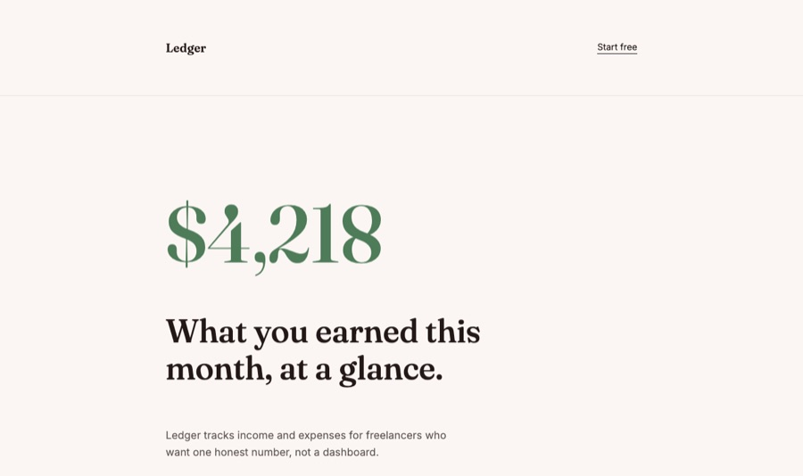

01
Find the taste field
References, anti-references, product category, and user preferences become a direction contract.
A design-taste layer for coding agents
Give your agent a brief. It comes back with a visual point of view, real assets, motion, checks, and memory.


The studio
Tastemaker builds the page around a point of view first, then makes the implementation obey it. The design choices are not decoration; they are written back into local files.
References, anti-references, product category, and user preferences become a direction contract.
Palette, type, spacing, assets, and motion rules go into `.tastemaker/style-lock.md`.
Sections lead with visuals: screenshots, diagrams, UI states, and handmade interface pieces.
Static checks catch dead links, missing alt text, weak motion, and obvious AI patterns.
Visible motion
The motion is not hidden in tiny hover states. The page assembles, the reference field slides into place, and the proof surface responds to scroll.

Proof surface
The comparison page stays live, but the homepage now treats it like evidence in a gallery, not a screenshot dropped into a card.
Open live comparison
live comparison
Taste registers
Each register changes the material language, not the quality bar. The same scanner, memory, and motion discipline still apply.




Memory
Your keep and reject calls become local project memory. Rejected directions do not disappear; they become guardrails for the next pass.
Install
npx skills add codeswithroh/tastemaker